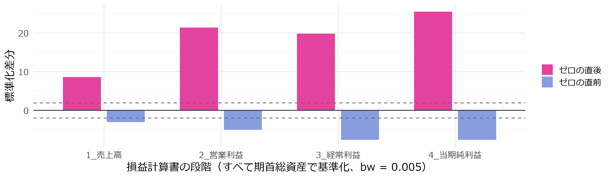
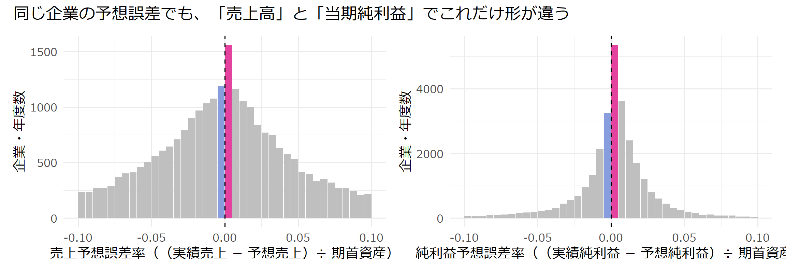
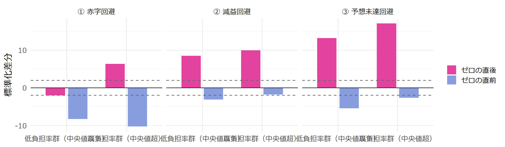

df <- read_csv("data/merged_forecast_both_financial.csv",
col_types = cols(日経会社コード = col_character())
) |>
rename(親会社利益 = "親会社株主に帰属する当期純利益（連結）／当期利益（単独）［累計］") |>
mutate(
決算年 = as.integer(str_sub(決算期, 1, 4)),
決算月 = as.integer(str_sub(決算期, 6, 7))
) |>
arrange(日経会社コード, 決算期) |>
group_by(日経会社コード) |>
mutate(
連続 = (決算年 - lag(決算年) == 1) & (決算月 == lag(決算月)),
期首資産 = if_else(連続, lag(資産合計), NA_real_),
前期利益 = if_else(連続, lag(親会社利益), NA_real_),
前期売上 = if_else(連続, lag(売上高), NA_real_),
前期営業利益 = if_else(連続, lag(営業利益), NA_real_),
前期経常利益 = if_else(連続, lag(経常利益), NA_real_)
) |>
ungroup()プレゼミ
Day7 : 第7章 利益分布アプローチの応用と発展
Soichi Matsuura
今日の座席
前（スクリーン・教卓）
机 1（5名）
松永
高杉
白川
山田
岡本
机 2（4名）
上馬場
大越
佐藤
井上
机 3（4名）
井口
田中
北風
尾形
机 4（4名）
橋本
山中
泉
川上
机 5（4名）
中野
木村
内村
坂場
机 6（4名）
桐畑
永川
イム
草刈
今日の95分
| 時間 | 誰が | 内容 |
|---|---|---|
| 00–08 | 教員 | 前回の振り返り（階級幅の裏切り）／今日の問い |
| 08–15 | 学生 | 議論＆予想：どんな設定を追加すれば、利益調整をもっと鮮明に暴けるか |
| 15–28 | 教員+学生 | 第1部 研究はどう発展したか：批判（Durtschi & Easton）と3つの発展ルート |
| 28–42 | 教員+学生 | 第2部 設定① 段階利益の比較：営業利益・経常利益・純利益のどれを動かしているか |
| 42–58 | 教員+学生 | 第3部 設定② インセンティブの比較：法人税等負担率（財務報告動機 vs 税務コスト） |
| 58–75 | 学生 | ライブ分析：ペアごとに「新しい切り口」で分布のゆがみを比較する |
| 75–83 | 学生 | 持ち寄り：どの条件・どの利益指標でゆがみが最大になるか |
| 83–95 | 教員 | 今日の裏切り（サンプル分割の罠：欠損と逆因果）／まとめ |
今日のゴール（テキスト第6章の発展・応用）
① 利益分布アプローチに対する学術的な批判と、それを乗り越える研究の発展の方向性を説明できる
② 「どの利益指標（手段）か」「どんな動機（インセンティブ）がある企業か」という設定を追加して検証できる
③ サブサンプル分析に潜む「選択バイアス（欠損）」と「逆の因果（小分母効果）」の罠を見抜き、回避できる
オープニング
前回の振り返りと事前課題C
第6回でわかったこと
- 日本企業でも、赤字・減益・予想未達の直前に「谷」、直後に「山」があった
- いちばん山が高いのは ③ 予想未達回避
- しかし、階級幅
bwを変えると「② 減益回避」の谷は消えた（頑健性の確認が不可欠）
第6回の残された課題
前回の分布アプローチだけでは、次の2つがわかりませんでした。
- 「どうやって（どの手段で）」利益を動かしたのか？
- 「どんな企業（どんな状況）ほど」利益を動かしているのか？
今日は、分析の「設定（切り口）」を追加することで、利益マネジメントの証拠をもっと鮮明に引き出します。
今日の問い
どんな設定を追加すれば、
利益マネジメントの「証拠」をもっと鮮明に捉えられるか
全企業をひとまとめにして「当期純利益」のヒストグラムを描くだけでは、利益調整をしていない会社も大量に混ざっています。
もしあなたが研究者なら、① どの利益の数字を見るか、② どんな特徴を持つ会社に絞るか、どんな設定を追加しますか？
議論＆予想してください（隣と3分）
Q1．日本の損益計算書には「売上高」「営業利益」「経常利益」「当期純利益」があります。予想未達回避の山がいちばん高いのはどれでしょうか？
① 売上高（トップラインをごまかす）
② 営業利益・経常利益（本業の利益を合わせる）
③ 当期純利益（最後のボトムラインで帳尻を合わせる）
④ どれも同じくらいゆがんでいる
Q2．「利益を増やすと税金（法人税）が増える」というコストがあります。法人税の負担率が「低い会社」と「高い会社」、どちらのほうが分布のゆがみが大きいと思いますか？
第1部：研究はどう発展したか
分布アプローチへの批判と論争
Burgstahler and Dichev (1997) の発表後、世界中の研究者がこの手法を使いましたが、やがて厳しい批判が登場しました。
代表的な批判（Durtschi & Easton, 2005 等）
- デフレーター（割り算の分母）の影響
- 利益を期首資産や時価総額で割るだけで、分母の違いによってゼロ付近の形がゆがむのではないか
- サンプル選択バイアス
- データベースに収録される条件や、アナリスト予想がつく企業の偏りで段差ができているだけではないか
研究者たちの反撃（研究の発展）
「単なる統計上の偶然（アーティファクト）ではなく、本当に経営者が動かしている」と証明するために、研究は3つの方向に発展しました。
- 方向①：手段（メカニズム）の特定
- 方向②：インセンティブ（動機・コスト）の比較
- 方向③：ベンチマークの階層と時系列変化
研究を発展させる「3つの追加設定」
| 発展の方向 | 追加する設定（切り口） | 検証する仮説の例 |
|---|---|---|
| ① 手段・段階利益の比較 | 売上高 vs 営業利益 vs 経常利益 vs 純利益 （キャッシュ・フロー vs 会計発生高） |
調整しやすいボトムライン（純利益）ほど、売上高よりもゼロ前後の段差が大きいはず |
| ② 動機とコストの比較 | 法人税等負担率の高低・負債比率・株式市場区分（プライム vs グロース） | 利益を増やしても税金コストが低い企業ほど、財務報告動機が優先され、分布のゆがみが大きいはず |
| ③ 状況・履歴の比較 | 前期の利益水準（連続増益中か）・規模・会計基準（日本基準 vs IFRS） | 連続増益が途切れそうな企業や、特定のガバナンス環境の企業ほどゆがみが強まるはず |
卒業論文のテーマの作り方も同じです。
先行研究のベース（第6回）に、「もし〇〇という理論が正しければ、A群はB群よりゆがみが大きいはずだ」という設定を1つ追加します。
第2部：設定① 段階利益の比較（どこで調整しているか）
データと関数を準備する（前回の復習＋拡張）
第6回の変数に加えて、売上高・営業利益・経常利益の前期実績と予想誤差も計算できるようにします。
4つの段階（売上・営業・経常・純利益）の比率を作る
日本の決算短信では、経営者が 売上高・営業利益・経常利益・純利益 の4つすべてについて期初予想を公表します。
d <- df |>
filter(決算月数 == 12, 期首資産 > 0, between(決算年, 2016, 2025)) |>
mutate(
# 基本の3変数（第6回）
利益率 = 親会社利益 / 期首資産,
利益増減率 = (親会社利益 - 前期利益) / 期首資産,
予想誤差率 = (純利益 - 予想純利益) / 期首資産,
# 追加設定①：段階別の予想誤差率（（実績 − 期初予想）÷ 期首資産）
売上予想誤差率 = (売上高 - 予想売上高) / 期首資産,
営業予想誤差率 = (営業利益 - 予想営業利益) / 期首資産,
経常予想誤差率 = (経常利益 - 予想経常利益) / 期首資産,
# 追加設定①b：段階別の利益率（実績 ÷ 期首資産）
営業利益率 = 営業利益 / 期首資産,
経常利益率 = 経常利益 / 期首資産
)もし経営者が「予想達成」を目指して会計上の調整を行うなら、損益計算書のどの段階で段差がいちばん大きくなるでしょうか。
検証①：4つの段階の「予想誤差率」を比べる

ゼロ直後の山は、売上高（8.6）→ 営業利益（21.4）→ 経常利益（19.8）→ 当期純利益（25.5）と、損益計算書の下に行くほど階段状に高くなっています！
ヒストグラムで見る：売上高 vs 当期純利益

- 売上高もゼロの直後が多いが、分布の裾が広く、段差は緩やか
- 当期純利益はゼロ付近に鋭く集中し、直前（青）と直後（赤）の落差が極端
段階利益を比較する設定を追加したことで、「経営者はボトムラインに行くほど会計上の裁量（特別損益や税金費用など）を使って予想を達成している」という手段の手がかりが得られました。
第3部：設定② インセンティブの比較（誰が調整しているか）
財務報告動機 vs 税務コストのトレードオフ
次に、「どんな企業ほど利益マネジメントを行うインセンティブが強いのか」という設定を追加します。
日本の制度：確定決算主義
- 日本では、株主向けの会計上の利益と、法人税を計算する税務上の課税所得が強く結びついている
- 経営者が赤字や減益・予想未達を避けようとして利益を上方に調整すると、法人税の支払い（税務コスト）も増えてしまう
検証する仮説
【仮説】法人税等負担率の高低による比較
- 法人税等負担率が低い企業（中央値以下）は、利益を増やしても税金が増えにくいため、財務報告動機が強く、ゼロ付近での分布のゆがみが大きい。
- 法人税等負担率が高い企業（中央値超）は、税務コストが重いため利益調整が抑制され、分布のゆがみは小さい。
法人税等負担率の中央値で2グループに分ける
[1] 31.8# A tibble: 2 × 6
税負担区分 行数 負担率中央値 赤字割合 減益割合 予想未達割合
<fct> <int> <dbl> <dbl> <dbl> <dbl>
1 低負担率群（中央値以下） 12736 25.2 0.043 0.292 0.262
2 高負担率群（中央値超） 12732 37 0.043 0.46 0.501中央値 31.8% を境に、約 12,700 行ずつの2グループに分かれました。
検証②：低負担率群 vs 高負担率群の標準化差分

②減益回避と③予想未達回避の「ゼロの直前（谷）」を見ると、低負担率群（-3.15, -5.48）のほうが、高負担率群（-1.78, -2.70）よりも谷が約2倍深く、仮説通りです！
……ところが、①赤字回避や「ゼロの直後（山）」を見ると、高負担率群のほうが山が高くなっています。なぜでしょうか？
ライブ分析（17分）
ペアで「新しい設定（切り口）」を追加して検証する
次の3つのテーマ（A・B・C）から1つ選び、2グループの標準化差分を比較してください。
- テーマA（企業規模）：期首資産の中央値で「大企業」と「中堅・小規模企業」に分ける
- テーマB（段階利益の赤字回避）：「営業利益率」「経常利益率」「当期純利益率」の3つで赤字回避を比べる
- テーマC（前期の税負担率）：「前期の法人税等負担率」の中央値で2グループに分ける（今日の裏切りの伏線！）
手順： 1. 自分のペアのテーマについて「どちらのゆがみが大きいか」予想を立てる 2. 次のスライドのコードを動かして bd_test() の結果を表にする 3. なぜその結果になったか、隣と2分で解釈をまとめる
ライブ分析のコード（テーマA・B・C）
# --- テーマA：企業規模（期首資産の中央値）で分ける ---
med_size <- median(d$期首資産, na.rm = TRUE)
d |>
mutate(規模 = if_else(期首資産 <= med_size, "1_小規模", "2_大規模")) |>
group_by(規模) |>
group_modify(~ bd_test(.x$予想誤差率)) # 利益率・利益増減率でも試す
# --- テーマB：段階利益（営業・経常・純利益）で赤字回避を比べる ---
bind_rows(
"1_営業利益" = bd_test(d$営業利益率),
"2_経常利益" = bd_test(d$経常利益率),
"3_当期純利益" = bd_test(d$利益率), .id = "利益指標"
)
# --- テーマC：「前期」の法人税等負担率で分ける ---
d_lag_tax <- df |>
group_by(日経会社コード) |>
mutate(前期負担率 = if_else(連続, lag(法人税等負担率), NA_real_)) |>
ungroup() |>
filter(決算月数 == 12, 期首資産 > 0, between(決算年, 2016, 2025), !is.na(前期負担率)) |>
mutate(
利益率 = 親会社利益 / 期首資産,
利益増減率 = (親会社利益 - 前期利益) / 期首資産,
予想誤差率 = (純利益 - 予想純利益) / 期首資産,
前期税区分 = if_else(前期負担率 <= median(前期負担率), "1_前期低税率", "2_前期高税率")
)
d_lag_tax |> group_by(前期税区分) |> group_modify(~ bd_test(.x$利益率))持ち寄り（8分）：3つのテーマの発見を比べる
テーマA：規模別の比較
| 規模 | 分析 | ゼロの直前 | ゼロの直後 |
|---|---|---|---|
| 大規模企業（中央値超） | ① 赤字回避 | -9.3 | 3.1 |
| 大規模企業（中央値超） | ③ 予想未達回避 | -5.4 | 22.2 |
| 小規模企業（中央値以下） | ① 赤字回避 | -6.5 | 1.9 |
| 小規模企業（中央値以下） | ③ 予想未達回避 | -5.5 | 13.2 |
- 赤字回避の谷も予想未達回避の山も、規模によって現れ方が異なる
テーマB：段階別の赤字回避
| 段階 | 度数_ゼロの直前 | 度数_ゼロの直後 | 標準化差分_ゼロの直前 | 標準化差分_ゼロの直後 |
|---|---|---|---|---|
| 営業利益率 | 276 | 545 | -4.9 | 1.6 |
| 経常利益率 | 251 | 512 | -5.2 | 2.8 |
| 当期純利益率 | 335 | 933 | -11.2 | 3.6 |
- 赤字回避でも、営業利益より経常利益・当期純利益のほうがゼロ直前の谷が深い
では、テーマC（前期の法人税等負担率）はどうなったでしょうか？ 第3部の謎と一緒に種明かしをします。
今日の裏切り
謎の解明：なぜ「当期の法人税等負担率」で分けると赤字回避が逆転したのか
第3部で、当期の法人税等負担率で2群に分けたとき、①赤字回避の「ゼロの直後（わずかな黒字）」の企業数はどうなっていたか見てみましょう。
# A tibble: 4 × 5
税負担区分 階級 度数 期待度数 標準化差分
<fct> <chr> <int> <dbl> <dbl>
1 低負担率群（中央値以下） ゼロの直前 18 81 -8.28
2 低負担率群（中央値以下） ゼロの直後 131 160 -2.02
3 高負担率群（中央値超） ゼロの直前 232 446 -10.3
4 高負担率群（中央値超） ゼロの直後 763 566. 6.35ゼロの直後（利益率 0%〜0.5% の微小黒字）にいる会社は、低負担率群には 131社 しかいないのに、高負担率群には 763社（約6倍！） も集中しています。
なぜ「わずかな黒字」の会社ばかりが高負担率群に集まったのでしょうか？
裏切りの正体①：赤字企業の75%が NA で消えていた
まず、赤字企業と黒字企業で 法人税等負担率 が欠損（NA）になっている割合を確かめます。
# A tibble: 3 × 4
黒字赤字 全体の件数 負担率ありの件数 負担率がNAの割合
<chr> <int> <int> <dbl>
1 赤字企業（利益率 < 0） 4466 1097 0.754
2 黒字企業（利益率 >= 0） 29073 24371 0.162
3 <NA> 11 0 1 データベース（日経NEEDS）では、赤字の会社は原則として税負担率が計算不能（NA）になります。
そのため、!is.na(法人税等負担率) で絞った瞬間に、ゼロより左（赤字企業）の 75.4% がサンプルから消えていたのです（サンプル選択バイアス）。
裏切りの正体②：分母が極小になる「逆の因果（小分母効果）」
さらに決定的なのが、法人税等負担率 の計算式の分母です。
\text{法人税等負担率} = \frac{\text{法人税・住民税及び事業税} \pm \text{法人税等調整額}}{\mathbf{\text{税金等調整前当期純利益}}} \times 100
微小黒字（ゼロの直後）で起きること
- 利益がゼロすれすれ（微小黒字）の会社は、分母（税引前利益）が極端に小さい
- しかし分子の税金には、利益ゼロでもかかる住民税均等割や交際費等の損金不算入が一定額残る
- 「極小の分母」で割るため、計算上の負担率が 50%〜100%超へと機械的に跳ね上がる！
因果関係が逆だった！
- ❌「税率が高いから、ゼロ直後に集まった」のではなく、
- ⭕ 「利益がゼロ直後（微小黒字）だったから、割り算の分母が小さくなって、自動的に高税率群に分類された」（逆の因果）
処方箋：テーマC（「前期」の税負担率）を使うとどうなるか
当期の利益からの「逆の因果」と「赤字企業の欠損」を断ち切るには、期首時点で決まっている「前期の法人税等負担率」（または前期に赤字で税負担がなかった企業）でグループ分けします。
# 前期に赤字（負担率NA）または前期負担率が中央値以下の企業 ＝「期首時点で税コストが低い群」
d_exante <- df |>
group_by(日経会社コード) |>
mutate(前期負担率 = if_else(連続, lag(法人税等負担率), NA_real_)) |>
ungroup() |>
filter(決算月数 == 12, 期首資産 > 0, between(決算年, 2016, 2025), 連続) |>
mutate(
利益率 = 親会社利益 / 期首資産,
利益増減率 = (親会社利益 - 前期利益) / 期首資産,
予想誤差率 = (純利益 - 予想純利益) / 期首資産,
期首税コスト区分 = if_else(
is.na(前期負担率) | 前期負担率 <= median(前期負担率, na.rm = TRUE),
"1_期首・低税コスト群（前期赤字または低税率）",
"2_期首・高税コスト群（前期高税率）"
)
)| 期首税コスト区分 | 分析 | 度数_ゼロの直前 | 度数_ゼロの直後 | 標準化差分_ゼロの直前 | 標準化差分_ゼロの直後 |
|---|---|---|---|---|---|
| 1_期首・低税コスト群（前期赤字または低税率） | ① 赤字回避 | 193 | 488 | -7.36 | 2.31 |
| 1_期首・低税コスト群（前期赤字または低税率） | ③ 予想未達回避 | 1888 | 3209 | -6.29 | 20.25 |
| 2_期首・高税コスト群（前期高税率） | ① 赤字回避 | 142 | 445 | -8.54 | 2.75 |
| 2_期首・高税コスト群（前期高税率） | ③ 予想未達回避 | 1360 | 2148 | -4.41 | 15.56 |
期首時点の変数で分け、前期赤字（繰越欠損金あり）の企業も捨てずに含めると、当期利益からの逆因果やサンプル脱落を防いで、フェアに比較できます。
まとめ
今日おぼえたこと
- 利益分布アプローチに対しては「単なる割り算やサンプルの偏りでは？」という批判（Durtschi & Easton, 2005）があり、それに答える形で設定を細分化する研究が発展した
- 設定①（段階利益の比較）：売上高 → 営業利益 → 経常利益 → 当期純利益と、会計上の裁量がきくボトムラインほど予想未達回避の山が高くなる
- 設定②（インセンティブの比較）：法人税等負担率が低い企業ほど、減益回避・予想未達回避の直前の「谷」が深い（財務報告動機と税務コストのトレードオフ）
- サブサンプル分析の2つの罠：
- 分割変数に
NAが多いと、特定の企業（赤字企業など）がごっそり消える（選択バイアス） - 当期の利益が分母に入った比率（当期の税負担率など）で分けると、微小黒字の会社が高税率群に自動分類される（小分母効果・逆の因果）
- 分割変数に
- 処方箋：グループ分けには、期首時点（前期末）で決まっている変数を使う
卒業研究に向けた「研究レシピ」
| ステップ | やること | チェックリスト（第4回〜第7回の教訓） |
|---|---|---|
| 1. ベース再現 | 先行研究の基本分析をそのまま再現する | 規模の調整は期首の値で割っているか？（第5回） |
| 2. 頑健性の確認 | 階級幅 bw や期間を変えても同じか確かめる |
bw = 0.0025, 0.005, 0.01 で結論が消えないか？（第6回） |
| 3. 設定の追加 | 段階利益・業種・企業特性で比較する | 理論的な理由（手段の違い・動機の違い）があるか？（第7回） |
| 4. 罠の点検 | 分割変数による NA の脱落や逆因果を調べる |
filter(!is.na(...)) で何行消えたか？当期の答えが分母に入っていないか？（第7回） |
この4ステップを踏めば、単なる「グラフを描いてみました」から、学術論文として通用する実証分析へと一気にレベルが上がります。

Ritsumeikan University, Business Administration